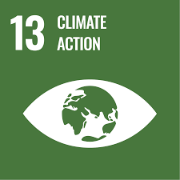
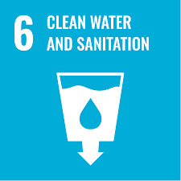

Tamil Nadu Environmental Initiatives
1. Continuous Ambient Air Quality Monitoring Station (CAAQMS)

SDG: Goal 13 - Climate Action
- CAAQMS is set up to monitor the air quality in real-time, providing data on pollutants to aid in environmental management.
- Helps reduce air pollution and promotes clean air in urban areas.
- Initiative launched in 2019 to monitor urban air quality effectively.
- Helps assess air pollution and enables timely corrective actions to improve air quality.
2. Mobile Continuous Ambient Air Quality Monitoring Station
SDG: Goal 13 - Climate Action
- This mobile unit monitors air quality across different regions, enabling quicker response to air quality issues.
- Helps in reducing environmental pollution and promoting sustainable development.
- Launched in 2021 as part of efforts to provide mobile solutions for environmental monitoring.
- Provides real-time air quality data and alerts for immediate action in response to pollution spikes.
3. Bhogi Awareness Campaign
SDG: Goal 12 - Responsible Consumption and Production
- The campaign educates the public on the environmental impact of traditional practices and promotes cleaner alternatives.
- Helps reduce pollution and promote responsible consumption habits among citizens.
- Started in 2020 with a focus on reducing firecracker usage during festivals.
- Aims to educate citizens on environmentally safe practices during festive seasons.
4. Care Air Centre (CAC)
SDG: Goal 13 - Climate Action
- The Care Air Centre is dedicated to monitoring and improving air quality in urban areas, reducing health impacts.
- Provides data and recommendations for improving air quality policies and practices.
- Set up in 2022, focusing on collaboration with local authorities to improve air quality standards.
5. Online Water Quality Monitoring System in River Cauvery

SDG: Goal 6 - Clean Water and Sanitation
- The system tracks the water quality of the River Cauvery, ensuring safe water for consumption and irrigation.
- Helps ensure water sustainability by monitoring pollution levels in real time.
- Initiated in 2020 to provide live updates on water quality in a critical water resource area.
6. Common Effluent Treatment Plant & Zero Liquid Discharge
SDG: Goal 6 - Clean Water and Sanitation
- This plant treats industrial effluents to reduce water pollution, promoting sustainable water use in industries.
- Supports Zero Liquid Discharge to ensure that no untreated water is released into the environment.
- Launched in 2021 as part of Tamil Nadu's push for sustainable industrial practices.
7. Training Programmes for Environmental Regulatory Compliance
SDG: Goal 4 - Quality Education
- Training programs educate industries on compliance with environmental regulations, focusing on sustainable practices.
- Promotes awareness and adherence to environmental laws for better environmental governance.
- Started in 2018 to enhance understanding of environmental regulations and promote best practices.